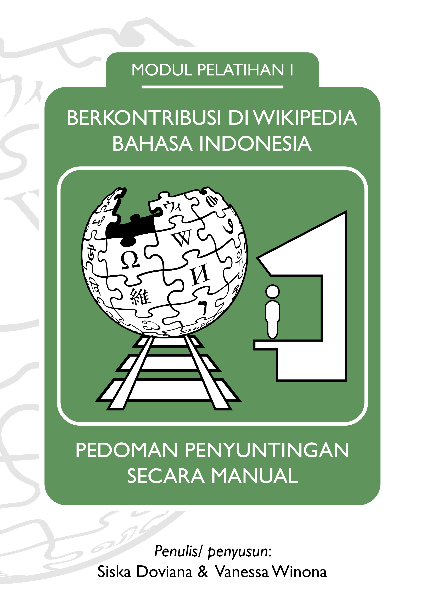
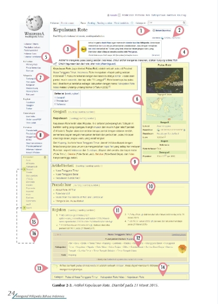
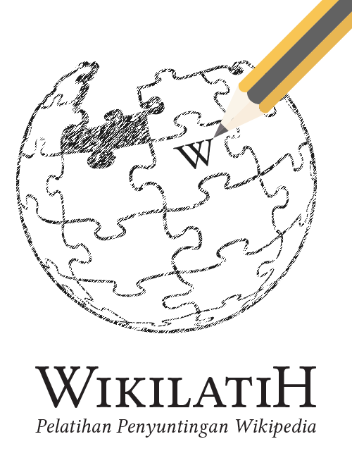

Belajar Menyunting di Wikipedia dengan Pedoman Penyuntingan Secara Manual dari Wikimedia Indonesia! (CC BY-SA)

Wikipedia merupakan ensiklopedia bebas yang dapat disunting oleh siapapun. Sebagai kontributor, Wikipedia menyediakan dua model penyuntingan yakni model penyuntingan manual dan penyuntingan dengan visual editor. Model penyuntingan manual merupakan model yang banyak digunakan sebelum teknologi visual editor dibuat. Dalam melakukan penyuntingan manual, kontributor harus terlebih dahulu memahami fungsi-fungsi sintaksis wiki yang bernama Wikiteks.
Untuk memberikan pemahaman mendalam terkait Wikipedia dan model penyuntingan manualnya, selain mengadakan pelatihan rutin, Wikimedia Indonesia juga menerbitkan modul pelatihan penyuntingan Wikipedia berbahasa Indonesia. Modul ini membagi penjelasan terkait Wikipedia terbagi menjadi 5 bab. Bab pertama merupakan penjelasan dasar tentang Wikipedia. Bab kedua merupakan penjelasan tentang situs Wikipedia, pancapilar Wikipedia, dan lisensi artikel Wikipedia. Bab tiga menjelaskan teknis penyuntingan artikel Wikipedia secara manual. Bab keempat berisi penjelasan tentang cara bersosialisasi dengan pengguna lain di Wikipedia. Sedangkan bab lima adalah bab tambahan yang membahas juga perihal penyuntingan menggunakan visual editor.

Modul ini dapat Anda akses dan unduh gratis di Wikimedia Commons. Karena menerapkan lisensi CC BY-SA (Atribusi-BerbagiSerupa), modul ini dapat Anda dapat gandakan, unggah ulang, dan gubah tanpa izin langsung dari pencipta atau pemegang hak ciptanya. Bahkan untuk kepentingan komersial sekalipun. Syaratnya adalah Anda wajib menyebutkan nama pencipta atau pemegang hak cipta dan sumber tempat materi asli modul, serta menerapkan lisensi yang sama apabila Anda membuat ciptaan turunan dari modul ini.

Ikuti juga pelatihan penyuntingan Wikipedia Bahasa Indonesia yang diadakan setiap bulan pada hari Sabtu minggu ke-2 oleh tim pelatih Wikimedia Indonesia!
Tags:
Oleh: Creative Commons Indonesia
11 Jul 2017Kategori:
Berita Terbaru
- Lokakarya Hak Cipta dan Lisensi Creative Commons di Pekanbaru
- Pengumuman Resmi: Hasil Akhir Training of Trainers Creative Commons Indonesia
- Literatur tentang Model Bisnis Terbuka "Made With CC"
- Data dan Artikel Ilmiah Terbuka dari PLOS!
- Konten Format Model 3 Dimensi Berilsensi CC di Platform Sketchfab